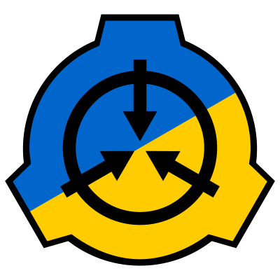

1) Вам будет нужен сам ратник, вот один из DcRAT
2) Вам будет нужен Ngrok для открытия портов
3)После установки введите в NGROK свой Токен
4) После этого напишите в NGROK команду ngrok tcp 8848 Должно быть как на скрине
5) После всех махинаций заходите в DcRAT и делает как на скрине
6) Потом ставите галочку Тут
7) Заходите на pastebin[Нужно зарегистрироваться]
8) В это Поле Вставляете данные из Ngrok на подобии этых 5.tcp.eu.ngrok.io:18139 [постояно разные]
9) Нажимаете на Create New Paste
10) Нажимаете на raw
11) Обратно в Dcrat и Вставляете ту ссылку которая была в raw
12) Нажимаете на build, и все готово
13) Если вы Офф пк, выкл NGROK и тд, и у вас пропали юзеры, то вам нужно проделать следующие махинации
14) Запустить NGROk так-же ngrok tcp 8848 скопировать то что написано в 8 и уже в pastebin нажать на свой ник, и потом на свою Пасту а потом на карандаш
15) и туда вставить данные из 14 пункта.